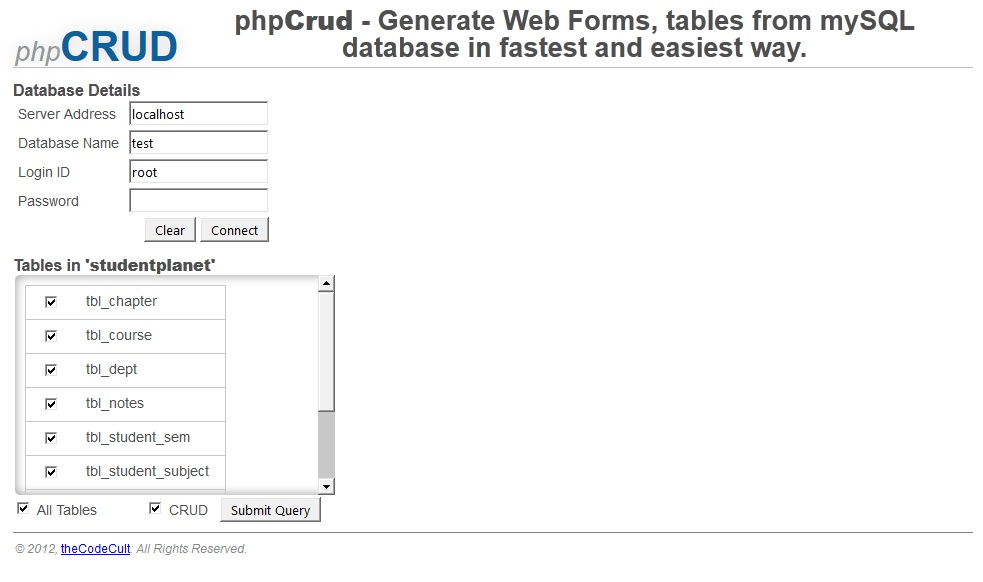
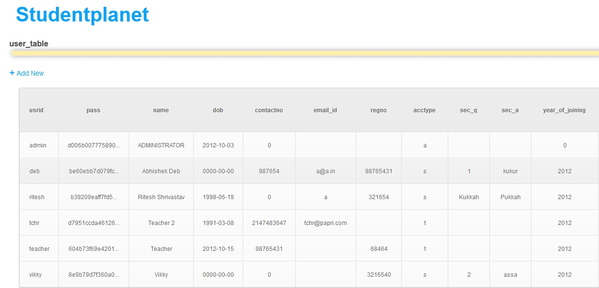
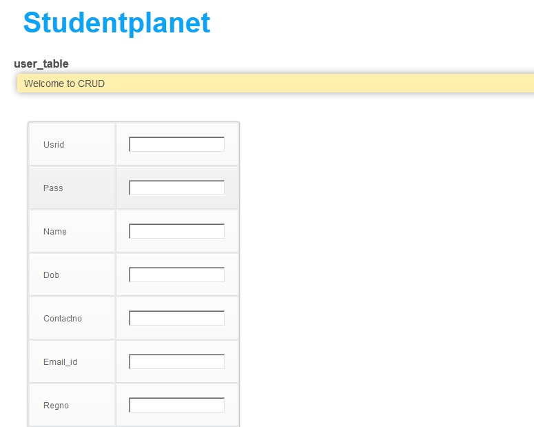
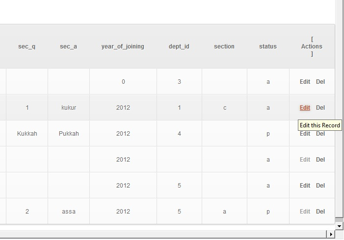
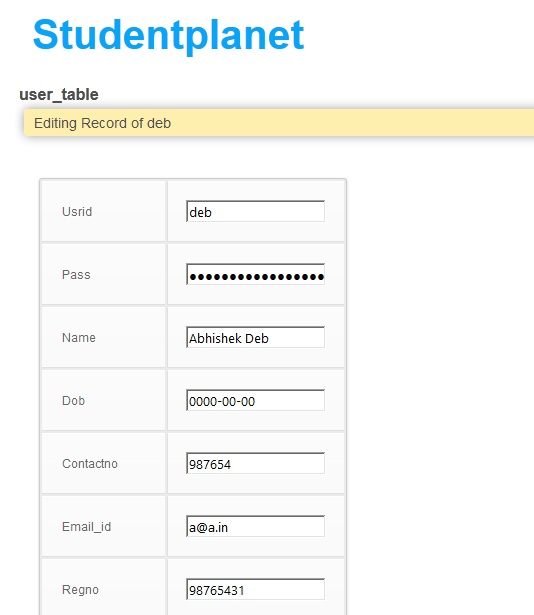
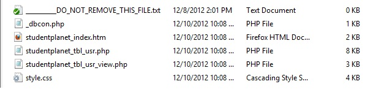

Welcome to phpCRUD.
Screenshot Gallery
{kind=link}
Out-of-the-box Screen. Enter all the database details and press Connect. You will get all the tables in teh connected database.
{kind=link}
After Generating all the required tables, another additional 'index' file will be created that will contain all the created table forms.

{kind=link}
This is the default look of all the tables with 'view' page.

{kind=link}
Option for Creating new redcords.

{kind=link}
Option for Editing and Deleting an existing record.

{kind=link}
Really fast editing of records with no updation to A_I numeric primary keys.

{kind=link}
For each table, 2 files are created - 1 with table name that consits all the CRUD operation; 2 with table _view name that consits only records and options adding, editing and deleting. For each session 3 additional and important files are created - style.css for styling the created files, _dbcon.php for database connectivity and index.php for viewing all the created files.
Authors and Contributors
Initial release is by Abhishek Deb(@vikz91) as of Dec 2012.
Support or Contact
Having trouble with phpCRUD? or having more suggestions or feature request for phpCRUD? contact at vikz91.deb@gmail.com